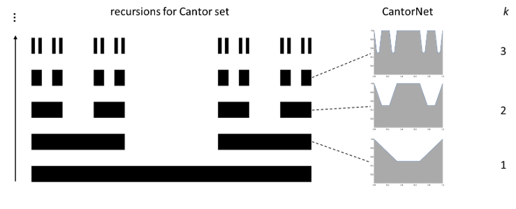

Overview
The construction of CantorNet is inspired by the triadic construction of the Cantor set. The Cantor set is self-similar: at each step, the middle third is removed, leaving smaller copies of the same structure behind. This construction can be written as \[ C_0=[0,1],\qquad C_{n+1}=\frac{1}{3}C_n\cup\left(\frac{2}{3}+\frac{1}{3}C_n\right), \] where the limiting set \(C=\bigcap_{n=0}^{\infty}C_n\), while geometrically simple to define, features interesting topological and measure-theoretical properties.
In CantorNet we use this idea to create a family of neural networks. Instead of relying on real-world datasets where the true geometry of decision boundaries is unknown and only approximated during training, we introduce a family of ReLU neural networks whose decision boundaries can be made increasingly ragged while still remaining analytically known. We provide an exact characterization of the 0-pre-image through the generating function \[ A:[0,1]\to[0,1], \qquad A(x)=\max\{-3x+1,\,3x-2\}. \]
Recursively nesting this map gives \[ A^{(k+1)}(x)=A\!\left(A^{(k)}(x)\right), \qquad A^{(1)}(x)=A(x), \] and the corresponding decision manifold can be written as \[ R_k=\left\{(x,y)\in[0,1]^2: y\le\frac{A^{(k)}(x)+1}{2}\right\}. \] We then define CantorNet as any family of ReLU networks that realize these decision boundaries.

We show that decision boundaries $R_k$ can be described in two ways, one which uses the fractal construction of the Cantor set, and the other which relies on merging polyhedral bodies (we refer to this as the disjunctive normal form, or DNF construction). Both descriptions are exact, and the same decision boundary can be realized by different network architectures. We refer interested readers to the paper for the derivations and exact formulas. The DNF-style construction used to build these boundaries is partly inspired by fuzzy logic, as introduced in Zadeh's foundational paper on fuzzy sets. In that formulation, a set is represented by a graded membership, or belonging function \(\mu_A:X\to[0,1]\), and the basic set operations become
\[ \mu_{\neg A}(x)=1-\mu_A(x),\quad \mu_{A\cup B}(x)=\max(\mu_A(x),\mu_B(x)),\quad \mu_{A\cap B}(x)=\min(\mu_A(x),\mu_B(x)). \]
The logic behind the nested \(\min(\cdots,\max(\cdots))\) expressions is as follows: \(\max\) acts like OR, \(\min\) acts like AND, and the adapted De Morgan laws let complements move through the construction while preserving the (graded) membership interpretation.
BibTeX
@inproceedings{lewandowski2024cantornet,
title = {{CantorNet}: A Sandbox for Testing Geometrical and Topological Complexity Measures},
author = {Lewandowski, Michal and Eghbalzadeh, Hamid and Moser, Bernhard A.},
booktitle = {Proceedings Track, NeurIPS 2024 Workshop on Symmetry and Geometry in Neural Representations},
year = {2024},
eprint = {2411.19713},
archivePrefix = {arXiv},
primaryClass = {cs.NE},
doi = {10.48550/arXiv.2411.19713},
url = {https://arxiv.org/abs/2411.19713},
note = {Proceedings track}
}